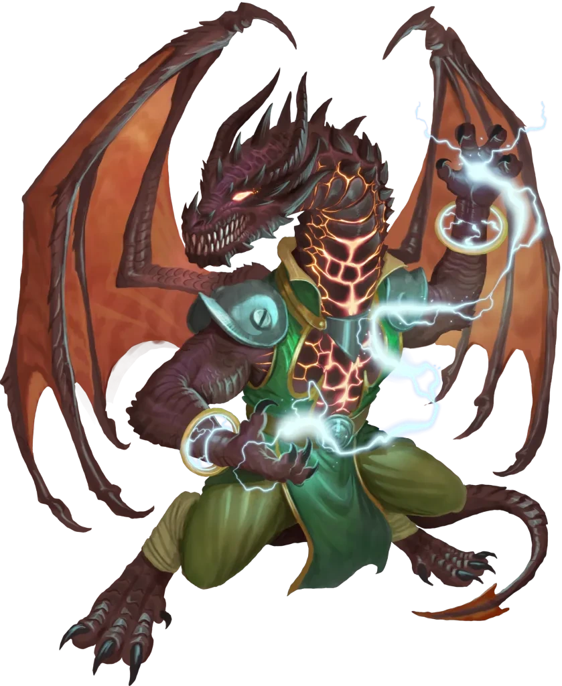

|
巨龙是强横非凡的存在，无论血统或年龄如何，都能在战场上建立赫赫战功。然而其中有一类巨龙截然不同――它们不仅善于战斗，更是为战而生。这些战龙精通百般武艺与各类兵法战事，无论是单打独斗的决战，还是动辄数万大军交锋的宏大战役皆能游刃有余。每一条战龙体内都潜藏着无穷无尽的未开发潜能……而当一场强大的仪式将这份潜能彻底释放时，又会发生什么？ 你是一条狂怒龙，出身于一脉在面临生死危机时会彻底激发“战或逃”本能中“死战”一面的世系。你属于战龙家族的一员。你的关联伤害类型为火焰。你的吐息武器为距离你 30 尺内、半径 5 尺的爆发区域，需进行敏捷豁免。 巨龙特质属性值提升。你的力量或体质值提升 2 点。 年龄。任何年龄段的巨龙都可以举行永恒之光仪式，因此哪怕是一条刚完成仪式的初生永光龙，严格来说也可能已经活了数千岁。不过，仪式澎湃的魔法能量会洗去衰老的痕迹。从仪式中苏醒的初生永光龙洋溢着青春活力与无限潜能。尽管部分学者持不同看法，但只要不死于暴力或其他灾祸，永光龙的寿命与传统派巨龙同样漫长。 阵营。永光龙的龙族血统会强烈影响其信念，但影响程度远不如同血统的传统派巨龙。例如，银永光龙往往是善良的捍卫者，而黑永光龙则往往狡诈刻薄。然而，永光龙深知龙脉并非不可违逆的宿命。任何永光龙都可以完全抛弃先祖的旧习，去开拓属于自己的道路。 体型。除非一条永光龙将自身魔力专注于增大体型（许多永光龙都会这样做），否则它们的体型并不会比常见的类人种族更大。你的体型可在小型或中型之间自选。 速度。你的基础步行速度为 30 尺。 黑暗视觉。你同样具备传统派巨龙的敏锐感官。在距离你 60 尺范围内，你可以将微光光照视作明亮光照，将黑暗视作微光光照。你在黑暗中无法分辨颜色，只能看到灰度的影像。 龙之馈赠。你从巨龙职业所列的龙之馈赠中获得一项龙之馈赠。如果某项馈赠具有先决条件，你必须满足其先决条件才能获得它。 龙类。你的生物种类为龙类，而非类人生物。 天生武器。除常规的徒手打击外，你还获得两种天生武器攻击：啃咬攻击与爪击攻击。你的啃咬攻击造成 1d6 点穿刺伤害；你的爪击攻击造成 1d4 点挥砍伤害。 你必须至少有一只手空闲才能发动爪击攻击。 你在进行爪击攻击的攻击检定和伤害掷骰时可以使用敏捷代替力量，但啃咬攻击不适用。 语言。你能够说、读、写通用语和龙语。 快速恢复。每当你掷生命骰以恢复生命值并掷出 1 时，重掷该骰子，直至掷出高于 1 的结果为止。 内在狂怒。你在负伤时会陷入狂怒。当你的当前生命值低于生命值上限的一半时，你的近战攻击伤害掷骰获得等同于你熟练加值一半的加值。 永光狂怒龙背景设定一条狂怒龙――尤其是渴望游历四方、探索世界的那类个体――有着极其充分的理由去举行永恒之光仪式：无需耗费数个世纪的苦修与克己自律，这场仪式便能让狂怒龙彻底掌控自己的暴脾气。不仅如此，仪式过程还会削弱伴随狂怒而来的嗜血冲动，使巨龙在暴怒之中依然能轻而易举地分清敌我。 尽管部分年长的传统派巨龙出于傲慢，对这种“走捷径”或“拔爪去势”的做法嗤之以鼻，但大多数狂怒龙都能理解其中的益处，对永光同族颇为接纳。有些家族甚至会将这场仪式作为成年礼提供给子女，期盼能赋予后代自由，让他们拥有偏远老家绝不可能提供的社交生活。因此，许多永光狂怒龙在举行仪式时年纪往往偏轻，大约相当于人类的青少年或青年时期。而那些起初拒绝仪式的年长传统派狂怒龙，有时也会在晚年因怒火失控、健康衰退而不得不补行仪式。 最不可能考虑举行仪式的狂怒龙，是那些将自身肆无忌惮的狂怒当作恐吓周边聚落、强索贡品的武器的恶徒。正因如此，坊间流传着一些冒险者设局算计发狂狂怒龙的故事――故意令其染上某种恶疾，迫使它为了祛除病痛而不得不举行永恒之光仪式。无论这些故事是真是假，听起来都未免太过迂回曲折：既然都有本事做到这一步了，为何还要满足于这种治标不治本的权宜之计？毕竟用不了多久，这条巨龙就很有可能化作潜伏在人群之中、伺机寻仇的危险恶徒。 对于狂怒龙而言，永恒之光仪式还有另一重益处。出于某些我仍在研究的原因，狂怒龙在经历仪式化作永光龙后，研究自身天生狂怒的本源会变得容易得多。试图开展此类研究的传统派狂怒龙不得不面对一个棘手的事实：这根本没法当作严谨的科学来操作――一方面，有时必须遭受致命重创才能触发狂怒；另一方面，研究过程本身就可能直接引爆它们的怒火，令观察记录根本无从谈起，哪怕雇请助手协助也无济于事。然而对永光狂怒龙来说，研究自身狂怒通常只是个完全可控的问题，甚至根本算不上什么困扰。唯一的遗憾在于，由于目前尚不清楚永恒之光仪式是否从根本上改变了狂怒的本质与源头，它们的研究成果未必能直接推广用于帮助传统派狂怒龙。 作为冒险者行走世间时，狂怒龙一般不会让旅伴知晓自己的本性以及内在狂怒潜藏的危险――尤其是那些生性合群、不愿让同伴平添忧虑的狂怒龙。不过，在某些尚武文化之中，它们的狂怒非但不是隐患，反而能提升巨龙的威望与地位。这类社群往往会成为永光狂怒龙真正的家园，让它们能够以最真实的自我获得接纳。 碾碎强敌在野蛮人眼中，狂怒龙既是备受尊崇的敬畏对象，也是梦寐以求的终极劲敌。一些野蛮人氏族口耳相传的神话传说中，讲述着本族的狂怒之力源自氏族所信奉的一条太古狂怒龙的恩赐；另一些氏族则声称，他们的狂怒源自先祖屠灭一条太古狂怒龙的壮举――无论是作为祝福还是诅咒流传至今。无论起源如何，相当数量的永光狂怒龙都会踏上野蛮人之道，而单凭这份与生俱来的狂怒本性，它们便能轻易获得其他族裔野蛮人氏族的接纳。 延伸阅读：对应怪物图鉴：狂怒龙 ・ 主书通用巨龙种族特质 ・ 巨龙职业 ・ 本卷新增龙之馈赠 |
 狂怒龙（Rage Dragon） |